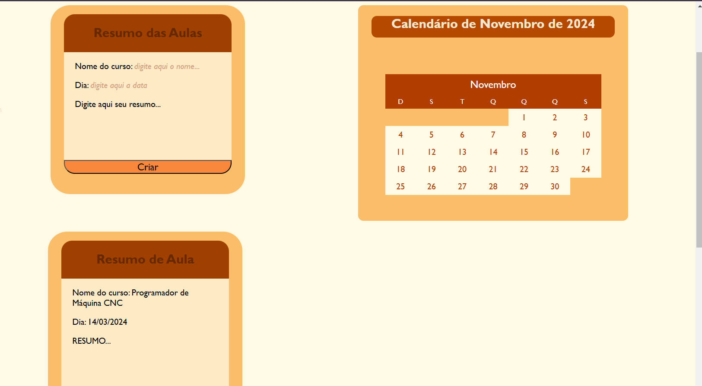
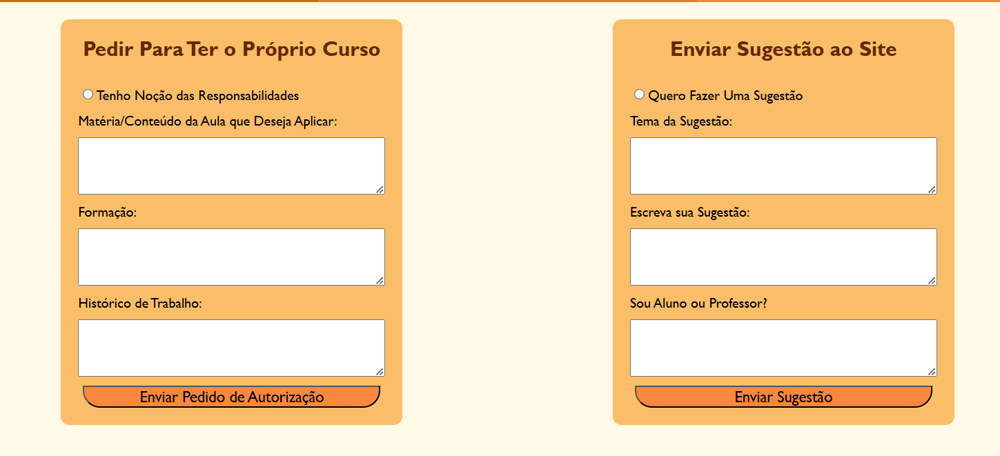

Criar e Gerenciar Seus Resumos no Site de Cursos
Organize suas ideias: Escreva resumos que ajudem a fixar o conteúdo aprendido, tornando o estudo mais eficiente.
Acessar facilmente: Todos os seus resumos ficam armazenados em sua conta, prontos para serem consultados a qualquer momento.
Envie sugestões
Compartilhar Ideias: Se você tem sugestões sobre novos cursos, melhorias na plataforma ou qualquer outra ideia, agora é mais fácil do que nunca!
Feedback Direto: Sua opinião é valiosa para nós. Com essa ferramenta, você pode nos ajudar a entender o que funciona e o que pode ser aprimorado.
Contribuição Colaborativa: Juntos, podemos construir um ambiente de aprendizado mais rico e eficaz. Suas sugestões podem impactar positivamente a experiência de todos os usuários.
Tutoriais:
Tutorial Como Criar e Gerenciar Seus Resumos no Site de Cursos
Estamos animados em apresentar a nova funcionalidade de criação de resumos em nosso site! Siga este passo a passo detalhado para aproveitar ao máximo essa ferramenta e organizar suas ideias de forma eficaz.
Passo 1: Acesse a Aba de Resumos Navegue até um Curso ou Seu Perfil Entre no site e escolha um curso que você está fazendo ou acesse seu perfil. Você pode encontrar seu perfil clicando no seu nome ou na foto de perfil, geralmente localizada no canto superior direito da página. Clique no Ícone 'Resumos'. Na página do curso ou no seu perfil, procure pelo novo ícone chamado 'Resumos'. Ele pode ser representado por um bloco de notas ou um lápis. Clique nesse ícone para prosseguir.
Passo 2: Visualize Seus Resumos Anteriores Acesse a Aba de Resumos. Após clicar no ícone, você será direcionado para uma nova aba onde todos os seus resumos anteriores estarão organizados por data de criação. Isso facilita a visualização e o acesso aos resumos que você já fez. Leia e Edite Resumos Anteriores. Para revisar um resumo que você já criou, clique na opção "Entrar" ao lado do resumo desejado. Isso permitirá que você leia o conteúdo e faça edições, se necessário. Aproveite para atualizar informações ou adicionar novas ideias!
Passo 3: Crie um Novo Resumo Inicie um Novo Resumo. Para começar a escrever um novo resumo, clique na primeira caixa disponível na aba de resumos. Essa caixa é projetada especialmente para você registrar suas ideias frescas. Nomeie Seu Resumo. No espaço designado como 'Nome do curso', insira o título do curso relacionado ao resumo que você está criando. Isso ajudará a manter seus resumos organizados e fáceis de identificar mais tarde.
Passo 4: Escreva Suas Ideias. Utilize o espaço disponível para anotar suas reflexões, conceitos importantes e qualquer informação que considere relevante sobre o curso. Lembre-se de ser claro e objetivo para facilitar a revisão posterior. Salve Seu Resumo. Após escrever suas ideias, clique no botão 'Criar' para salvar seu resumo online. Isso garante que suas anotações fiquem armazenadas na plataforma e possam ser acessadas sempre que precisar.
Dicas: Revise Regularmente: Volte à aba de resumos periodicamente para revisar o que escreveu e fazer ajustes conforme necessário.
Utilize Palavras-Chave: Ao escrever seus resumos, use palavras-chave que ajudem na memorização dos conteúdos.
Envie sugestões
Passo 1: Acesse a Seção de Contato Navegue até o Menu Principal Quando você abrir nosso site, olhe para a parte superior da página. Você verá o menu principal, que contém várias opções, como "Cursos", "Sobre Nós" e "Contato". Clique em 'Contato'. No menu principal, localize e clique na opção 'Contato'. Isso o levará a uma nova página onde você poderá nos enviar suas sugestões e comentários.
Passo 2: Preencha o Formulário de Sugestões Localize o Formulário Na página de contato, você encontrará um formulário projetado especificamente para receber suas sugestões. O formulário geralmente contém campos como "Nome", "E-mail", "Assunto" e "Mensagem". Preencha Seu Nome. No campo 'Nome', digite seu nome completo ou o nome que você gostaria que usássemos ao responder sua sugestão. Isso nos ajudará a personalizar nossa comunicação. Insira Seu E-mail No campo 'E-mail', forneça um endereço de e-mail válido. Essa informação é essencial para que possamos entrar em contato com você caso precisemos de mais detalhes ou para responder à sua sugestão. Escolha um Assunto No campo 'Assunto', escreva um título que resuma sua sugestão. Isso ajudará nossa equipe a entender rapidamente do que se trata sua mensagem. Descreva Sua Sugestão, No campo 'Mensagem', escreva suas ideias e comentários de forma clara e objetiva. Tente ser específico sobre o que você gostaria de sugerir ou melhorar na plataforma. Quanto mais detalhes você fornecer, melhor poderemos compreender sua proposta.
Passo 3: Envie Sua Sugestão Revise Suas Informações Antes de enviar, faça uma rápida revisão para garantir que todas as informações estão corretas e que sua mensagem está clara e bem estruturada. Clique no Botão 'Enviar Sugestão', Após preencher todos os campos do formulário, localize o botão 'Enviar Sugestão' na parte inferior do formulário. Clique nesse botão para enviar sua mensagem diretamente para nossa equipe.
Passo 4: Aguarde Nosso Retorno Confirmação de Envio Após clicar em 'Enviar Sugestão', uma mensagem de confirmação aparecerá na tela, informando que sua sugestão foi recebida com sucesso. Isso significa que estamos cientes da sua contribuição! Aguarde Nossa Resposta, Nossa equipe analisará sua sugestão com atenção e retornará o mais breve possível. Fique atento ao seu e-mail para qualquer atualização ou resposta sobre a sua sugestão.
Dicas Finais Seja Claro e Conciso: Ao escrever sua mensagem, procure ser claro e direto, facilitando a compreensão da sua ideia.
Sugestões Construtivas: Pense em como suas ideias podem beneficiar a comunidade de alunos e melhorar nossa plataforma.
Feedback é Valioso: Lembre-se de que suas sugestões são muito importantes para nós, pois ajudam a moldar o futuro do nosso site!
Assista aula ao vivo
Passo 1: Acesse o Menu Principal Abra o Site Comece acessando nosso site de cursos. Certifique-se de estar na página inicial. Localize o Menu Principal, Na parte superior da página, você verá o menu principal. Este menu contém várias opções, como "Cursos", "Sobre Nós", "Contato" e muito mais.
Passo 2: Encontre a Seção de Aulas ao Vivo Role para Baixo, No menu principal, role para baixo até encontrar a seção 'Aulas ao Vivo'. Essa seção pode estar destacada ou listada entre outras opções. Clique em 'Aulas ao Vivo', Assim que encontrar a seção, clique nela para acessar todas as aulas ao vivo disponíveis.
Passo 3: Participe da Aula Ativa Identifique a Aula Ativa, Na página de aulas ao vivo, você verá uma lista de aulas programadas. Procure pela aula que está ativa agora. Geralmente, as aulas ativas são destacadas ou marcadas com um ícone especial. Clique em 'Entrar', Ao lado da aula ativa, você encontrará um botão com a opção 'Entrar'. Clique nesse botão para acessar a aula ao vivo.
Passo 4: Verifique a Programação na Aba do Curso Acesse a Aba do Curso Se você estiver interessado em saber mais sobre as aulas ao vivo programadas para um curso específico, vá até a aba do curso correspondente. Você pode fazer isso acessando seu painel de cursos ou navegando pela lista de cursos disponíveis. Verifique a Programação de Aulas ao Vivo, Na aba do curso, procure pela seção que lista as aulas ao vivo programadas. Essa programação será visível se o professor do curso tiver marcado aulas ao vivo. Você poderá ver as datas e horários das próximas aulas.
Dicas Chegue Cedo: Tente entrar na aula alguns minutos antes do horário marcado para garantir que sua conexão esteja funcionando e que você não perca o início.
Verifique sua Conexão: Uma boa conexão à internet é fundamental para uma experiência de aprendizado fluida durante as aulas ao vivo.
Calendario
Passo 1: Acesse a Aba de Perfil Abra o Site Inicie acessando nosso site de cursos e faça login na sua conta, se ainda não estiver logado. Navegue até Seu Perfil Após fazer login, localize a opção 'Perfil' no menu principal, que geralmente está no canto superior direito da página. Clique nela para acessar suas configurações e informações pessoais.
Passo 2: Acesse o Calendário Encontre a Aba de Calendário Dentro da sua área de perfil, procure pela aba 'Calendário'. Essa aba pode estar listada junto com outras opções, como “Configurações” ou “Histórico”. Clique na Aba de Calendário Clique na aba 'Calendário' para visualizar sua agenda e os eventos já programados.
Passo 3: Adicionar um Evento Clique em 'Adicionar Evento' Na interface do calendário, você verá um botão chamado 'Adicionar Evento'. Este botão geralmente está localizado na parte superior ou lateral da tela. Clique nele para começar a adicionar um novo evento. Preencha as Informações do Evento Uma nova janela ou formulário aparecerá solicitando que você insira as informações do evento. Preencha os seguintes campos: Título do Evento: Dê um nome ao seu evento. Data e Hora: Selecione a data e a hora em que o evento ocorrerá. Descrição (opcional): Adicione uma breve descrição do evento, se desejar. Local (opcional): Informe onde o evento será realizado, se aplicável. Salve o Evento Após preencher todas as informações necessárias, clique no botão 'Salvar' ou 'Adicionar' para confirmar a criação do evento no seu calendário.
Passo 4: Adicionar um Lembrete Clique em 'Adicionar Lembrete' Se você deseja adicionar um lembrete em vez de um evento, localize o botão chamado 'Adicionar Lembrete', que também estará na aba do calendário. Clique nele. Preencha as Informações do Lembrete Assim como no evento, uma nova janela ou formulário aparecerá. Preencha os seguintes campos: Título do Lembrete: Dê um nome ao lembrete. Data e Hora: Selecione quando você gostaria de ser lembrado. Descrição (opcional): Adicione detalhes adicionais sobre o lembrete, se necessário. Salve o Lembrete Após preencher as informações do lembrete, clique no botão 'Salvar' ou 'Adicionar' para confirmar a criação do lembrete.
Dicas Finais Revise Seus Eventos e Lembretes: Periodicamente, volte à aba do calendário para revisar seus eventos e lembretes programados. Defina Alertas: Se possível, configure alertas para receber notificações antes dos eventos ou lembretes.
Mantenha-se Organizado: Utilize cores diferentes (se disponível) para categorizar eventos e lembretes, facilitando a visualização.
Pedindo para ser professor
Passo 1: Acesse a Aba de Contato Abra o Site Inicie acessando nosso site de cursos e faça login na sua conta, se ainda não estiver logado. Navegue até a Seção de Contato No menu principal, localize e clique na opção 'Contato'. Essa seção é onde você pode se comunicar conosco e agora também solicitar a propriedade de um curso.
Passo 2: Solicitar Propriedade de um Curso Encontre o Formulário de Solicitação Dentro da aba de contato, você verá um formulário específico para solicitar a propriedade de um curso. Procure por uma opção que mencione “Solicitar Propriedade” ou algo semelhante. Preencha as Informações Necessárias Clique no formulário para abri-lo e preencha os campos obrigatórios. Aqui estão algumas informações que você provavelmente precisará fornecer: Nome Completo: Insira seu nome completo. E-mail: Forneça um endereço de e-mail válido para que possamos entrar em contato com você. Título do Curso: Escreva o nome do curso que você gostaria de criar. Descrição do Curso: Forneça uma breve descrição do conteúdo que você pretende ensinar, incluindo os objetivos do curso e os tópicos que serão abordados. Experiência ou Qualificações: Se houver um campo para isso, descreva sua experiência ou qualificações relacionadas ao tema do curso. Revise Suas Informações Antes de enviar, revise todas as informações preenchidas para garantir que estão corretas e completas. Envie Sua Solicitação Após revisar, clique no botão 'Enviar' ou 'Solicitar' para enviar sua solicitação para nossa equipe.
Passo 3: Aguardando Resposta Aguarde a Análise da Sua Solicitação Após enviar sua solicitação, nossa equipe irá analisar seu pedido. Você receberá uma notificação por e-mail informando se sua solicitação foi aceita ou não. Verifique Seu E-mail Regularmente Fique atento ao seu e-mail, pois é por lá que iremos comunicar o resultado da sua solicitação. Passo 4: Criando Seu Conteúdo para o Curso Acesso à Plataforma de Criação Se sua solicitação for aceita, você receberá instruções sobre como acessar a plataforma onde poderá criar seu conteúdo para o curso. Comece a Criar Seu Curso Utilize as ferramentas disponíveis na plataforma para desenvolver seu curso. Isso pode incluir: Criar módulos e aulas Adicionar materiais complementares (vídeos, PDFs, quizzes) Definir datas e horários para aulas ao vivo (se aplicável) Salve Seu Progresso Regularmente Enquanto cria seu conteúdo, lembre-se de salvar seu progresso regularmente para não perder nenhuma informação.
Dicas Finais Seja Claro e Objetivo: Ao descrever seu curso, use uma linguagem clara e objetiva para atrair potenciais alunos.
Pesquise Conteúdos Relacionados: Antes de começar a criar, pesquise outros cursos semelhantes para entender o que funciona bem.
Peça Feedback: Se possível, peça feedback de colegas ou amigos sobre o conteúdo que você está criando.